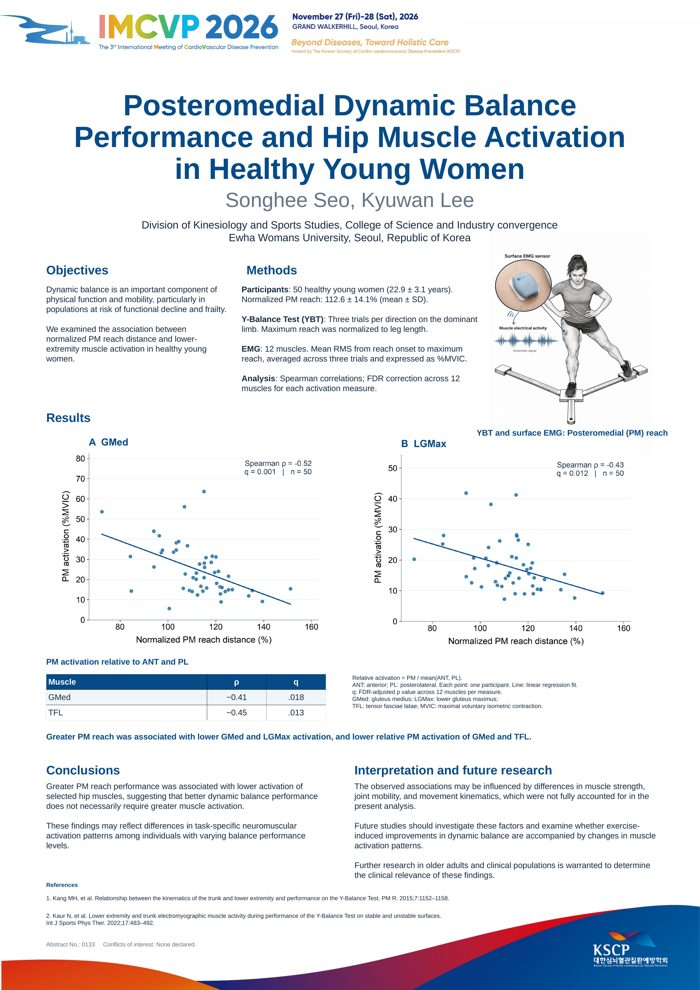

M.A. Student in Physical Education (Kinesiology) · Ewha Womans University, Seoul
I study how the nervous system controls the lower extremity during balance and functional movement. Nearly twenty years of classical ballet training, including professional performance with the Universal Ballet Company, shaped my interest in neuromuscular control. My current work combines surface electromyography with performance-based assessments to examine how alignment, dynamic knee valgus, and muscle activation relate to dynamic balance.
A cross-sectional study using 12-channel surface EMG (Noraxon Ultium), two-dimensional frontal-plane video analysis of the single-leg squat, and the Y-Balance Test to examine how static alignment and dynamic knee valgus relate to balance performance and lower-extremity muscle activation.

In 50 healthy young women, greater posteromedial Y-Balance reach was associated with lower gluteus medius and lower gluteus maximus activation, suggesting that better dynamic balance does not necessarily require greater muscle activation.
Dynamic balance is an important component of physical function and mobility, particularly in populations at risk for functional decline and frailty. Posteromedial (PM) reach during the Y-Balance Test (YBT) requires coordinated lower-extremity neuromuscular control, yet the relationship between balance performance and muscle activation remains unclear. This study examined the association between PM reach performance and lower-extremity muscle activation in healthy young women.
Fifty healthy young women performed three trials of the YBT in the anterior (ANT), posteromedial (PM), and posterolateral (PL) directions on the dominant limb. Maximum reach distance was normalized to leg length. Surface electromyography from 12 lower-extremity muscles was normalized to maximal voluntary isometric contraction (MVIC), and mean activation during the reach phase was expressed as %MVIC. Associations between normalized PM reach and muscle activation were examined using Spearman rank correlations with false discovery rate (FDR) correction across 12 muscles. To examine direction-specific activation independent of the common MVIC reference, relative PM activation was calculated as PM activation divided by the mean activation during the ANT and PL directions.
Participants had a mean age of 22.9±3.1 years, with a mean normalized PM reach of 112.6±14.1%. Greater normalized PM reach was associated with lower activation of the gluteus medius (GMed; ρ=−0.52, q=.001) and lower gluteus maximus (LGMax; ρ=−0.43, q=.012). Direction-specific analysis showed that greater PM performance was also associated with lower relative PM activation of the GMed (ρ=−0.41, q=.018) and tensor fasciae latae (TFL; ρ=−0.45, q=.013). No muscle demonstrated significantly greater PM-specific activation with better PM performance after FDR correction.
Better PM dynamic balance performance was associated with lower activation of selected hip muscles rather than uniformly greater muscle activation. The direction-specific findings suggest that these associations were not solely attributable to MVIC normalization and may reflect differences in neuromuscular strategies during dynamic balance. These findings highlight the importance of considering muscle activation patterns alongside performance-based balance measures. Further studies are needed to determine whether similar patterns are present in older adults and cardiovascular populations with impaired balance, mobility limitations, or frailty.